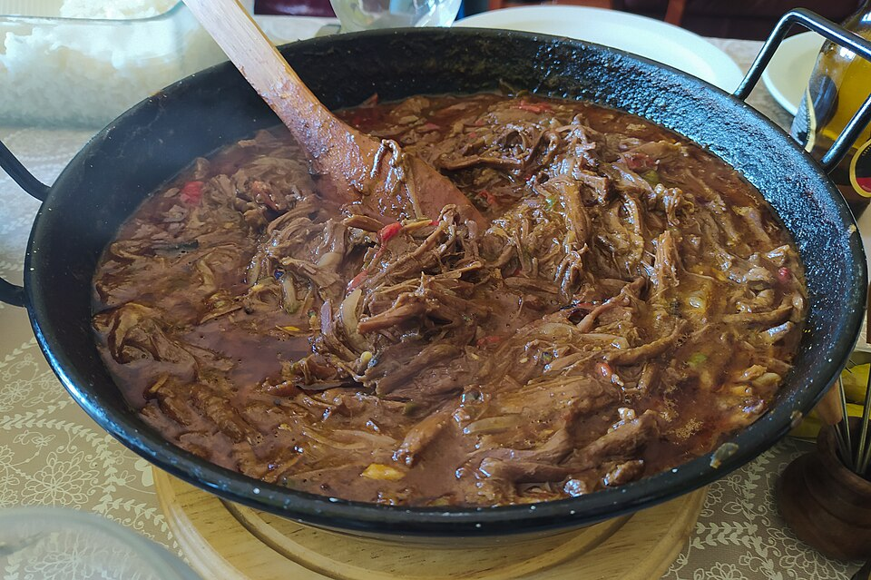

Image by El Mono Español - Wikimedia Commons - CC-BY-SA-4.0
Ropa vieja(Old clothes)
Ropa vieja is shredded beef prepared using the cut of meat known as flank steak. Depending on the chef, the recipe may be made with aromatic herbs, vegetables, or seasonings.
Ingredients
- 1 ½ lb beef.
- 3 teaspoons dry wine or white wine.
- 6 teaspoons tomato sauce.
- ¼ cup olive oil.
- ¼ teaspoon black pepper.
- 1 red bell pepper, julienned (cut into very thin, long strips).
- 6 cloves garlic.
- ½ teaspoon cumin.
- 2 bay leaves.
- 1 onion, julienned.
- 2 *ají cachucha* peppers, julienned.
- Salt to taste.
Instructions
- Trim the excess fat from the meat.
- Once the meat is cleaned, place it in a pot with water, salt, the onion, and three cloves of garlic; let it cook until tender, about 30 minutes.
- When the meat is tender, remove it from the pot and reserve the cooking liquid along with the onions. (You can discard the garlic.)
- Let the meat cool, then shred it.
- Prepare a stir-fry using the reserved onion, the three unused garlic cloves, the oil, and the *ají cachucha* peppers; sauté for half a minute.
- Add two ladles of the reserved cooking liquid, the cumin, the bay leaf, and the black pepper; stir to incorporate the spices.
- Add the shredded meat, the dry wine, and the tomato purée; cook over medium heat for a few seconds.
- Once the liquid evaporates, stir the meat briefly and cover the pan. Let it cook for ten minutes.
- Before turning off the heat, add the red bell pepper.
Home